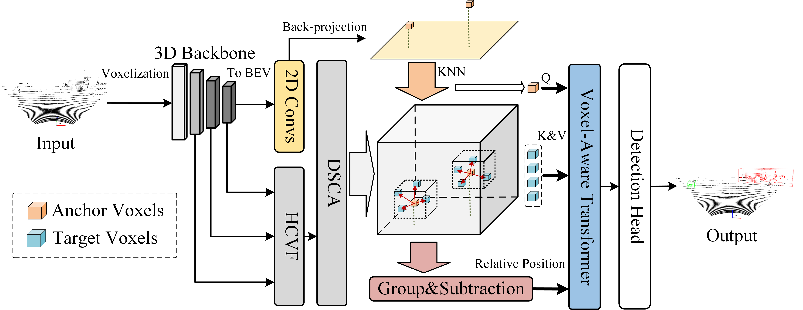

Huazhen Zhang
Master of Engineering in Artificial Intelligence
School of Automation
Central South University (CSU), Changsha, China
Email: your.email@example.com
Master of Engineering in Artificial Intelligence
School of Automation
Central South University (CSU), Changsha, China
Email: your.email@example.com
目前在中南大学自动化学院攻读人工智能方向硕士学位，并即将步入博士阶段进行深造。我的研究致力于人工智能建模，核心领域涵盖 3D 目标检测、点云处理、故障诊断以及时间序列信号分类。

Expert Systems with Applications

Signal, Image and Video Processing